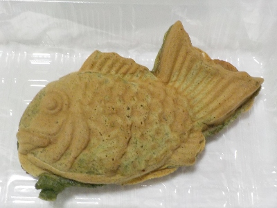

島根県出雲市
更新日 : 2026/04/15

タイ焼きの生地にヨモギが入っていて、緑色です。表面はそうでもないけど、中はとっても緑色。
今はヨモギの季節なので、旬なものを食べたって気分になれました。
ヨモギのせいか生地がモチモチしてました。餡子が柔らかかったので、生地でしっかりホールドした感じになり食べやすかったです。
200円でした。近頃パンとか和菓子とか値段が高いので、それを思ったら買いやすいですね。
【おいしいものを食べよう。】【たくさん寝よう。】
【ソロ活をしよう!】【季節感のあることをしよう。】【動画視聴はほどほどに。】【当サイトの全てのコンテンツは無断転載禁止です。】